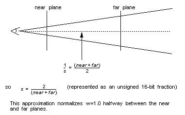

|
|
Matrix State
The “geometry engine” in the RSP implements a fixed-point matrix engine with the following matrix state:
When a group of vertices is loaded, they are first transformed by the matrix MP (the current top of the modeling stack multiplied by the projection matrix). All vertex transformations are done only when they are loaded; sending a new matrix down later will not change any points already in the points buffer.
The modeling matrix stack resides in DRAM. It is the application’s responsibility to allocate enough memory for this stack and provide a pointer to this stack area in the task list.
The format of a matrix is a bit unusual. It is optimized for the RSP’s vector unit (used during the multiplies and transformations.) This format groups all of the integer parts of the elements, followed by all of the fractional parts of the elements. This unusual format is not exposed to the user, unless he/she chooses not to use the matrix utilities in the libraries.
Insert a Matrix
Table 1 gsSPMatrix(Mtx *m, unsigned int p)
Pop a Matrix
Table 2 gsSPPopMatrix(unsigned int n)
Perspective Normalization
The library function guPerspective( ) returns one approximation for this scale value, which is a good estimate for most cases:
Figure 11.3.1 Perspective Normalization Calculation
Table 3 gsSPPerspNormalize(unsigned short int s)
Note on Coordinate Systems and Big Numbers
Inserts a new matrix into the display list.
Parameter
Values
m
pointer to the new matrix
p
G_MTX_MODELVIEW or G_MTX_PROJECTION,
G_MTX_MUL or G_MTX_LOAD,
G_MTX_PUSH or G_MTX_NOPUSH
This command pops the matrix stack.
Parameter
Values
n
unused
This scale value is used to scale the transformed w coordinate down, prior to dividing out w to compute the screen coordinates (which are similarly scaled). The effect of this is to maximize the precision of this divide.

Parameter
Values
s
16-bit unsigned fractional perspective normalization scale
The RSP is a fixed point machine, so keeping coordinate systems within a certain range is important. If numbers in the final coordinate system (or intermediate coordinate systems) are too big, then the geometry of objects can be distorted, textures can shift erratically, and clipping can fail to work correctly. In order to avoid these problems keep the following notes in mind:
abs(x1-x2) + abs(w1-w2) < 32767.0
abs(y1-y2) + abs(w1-w2) < 32767.0
abs(z1-z2) + abs(w1-w2) < 32767.0
One way to check this is to take the largest vertices that you have and run them throught the largest matrices you are likely to have, then check to make sure that these conditions are met.
A reccommended way of avoiding trouble is to never allow any componant to get larger than 16383.0 or smaller than -16383.0. To ensure this find:
Now M * S + T < 16383.0 should be true. If you experience textures wobbling or shifting over a surface, clipping not working correctly, or geometry behaving erratically, this is a good place to check.
A Few Words About Matrix Precision
The RSP uses fixed-point 32-bit multiplies during matrix operations. Since the product of two 32-bit numbers is a 64-bit number, only the middle 32 bits of the answer is retained. Overflow of intermediate terms is possible, especially in large coordinate systems or unusual projection matrices.
In order to avoid fixed-point precision problems, in some cases it may be desirable to compute the matrix in floating point on the R4300 and just load it.
Matrix multiplies are very fast on the RSP, but they are not free. If possible, reduce matrix operations by pre-multiplying the matrices at modeling time or compile time.
|
Copyright © 1999 Nintendo of America Inc. All Rights Reserved Nintendo and N64 are registered trademarks of Nintendo Last Updated January, 1999 |